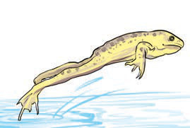
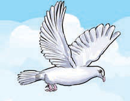

Movement
All living things move. Movement is the change of position or direction of a body or part of the body. Animal movement is usually visible. Animals can move from one place to another by walking, flying, crawling or hopping. Figure 4 shows a human being, a frog and a bird moving. Movement in plants involves only certain parts, and not the whole plant. Movement in plants is mainly through bending, twisting and elongation of certain parts of plants. The movement in plants is very slow, and therefore, difficult to be seen. Movement enables living things to move to sources of food and water. Movement also enables living things to escape from danger.

Human being walking

Frog hopping

Bird flying
Figure 4: Movements in animals